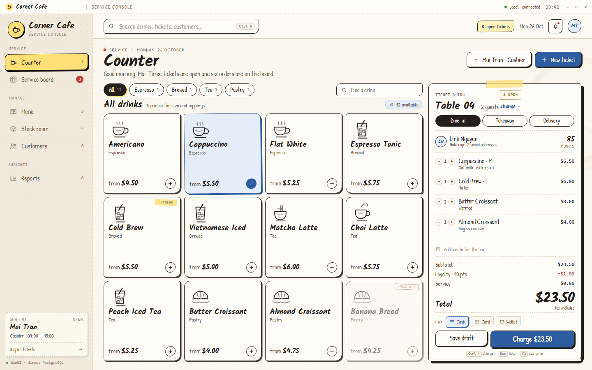

Corner Cafe · service console redesign
WinUI 3 · 1440 × 9006 artboardsno production edits
Concept art · for approval
Paper
Service
A calmer counter, a faster service board, and one notebook for the whole shop.
For approval
not built yet
not built yet


The till reads like a receipt.Ticket, loyalty, pay — in that order.